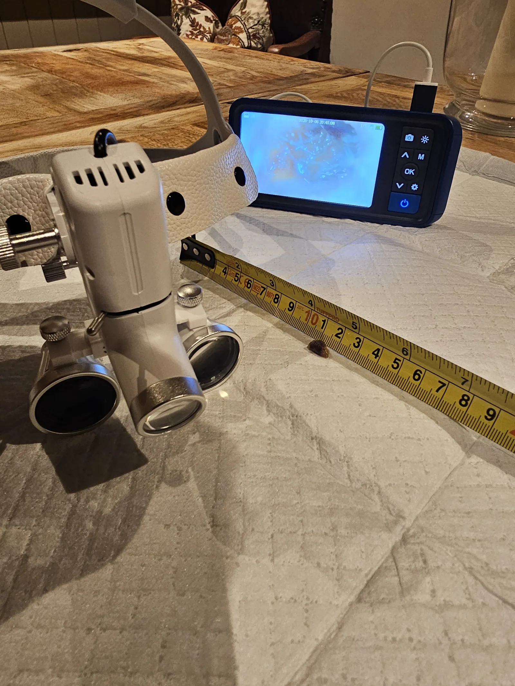
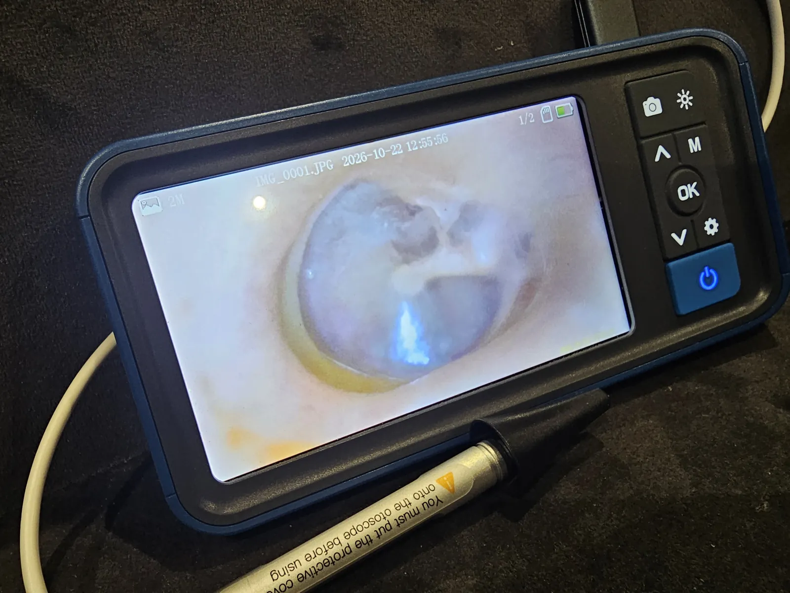
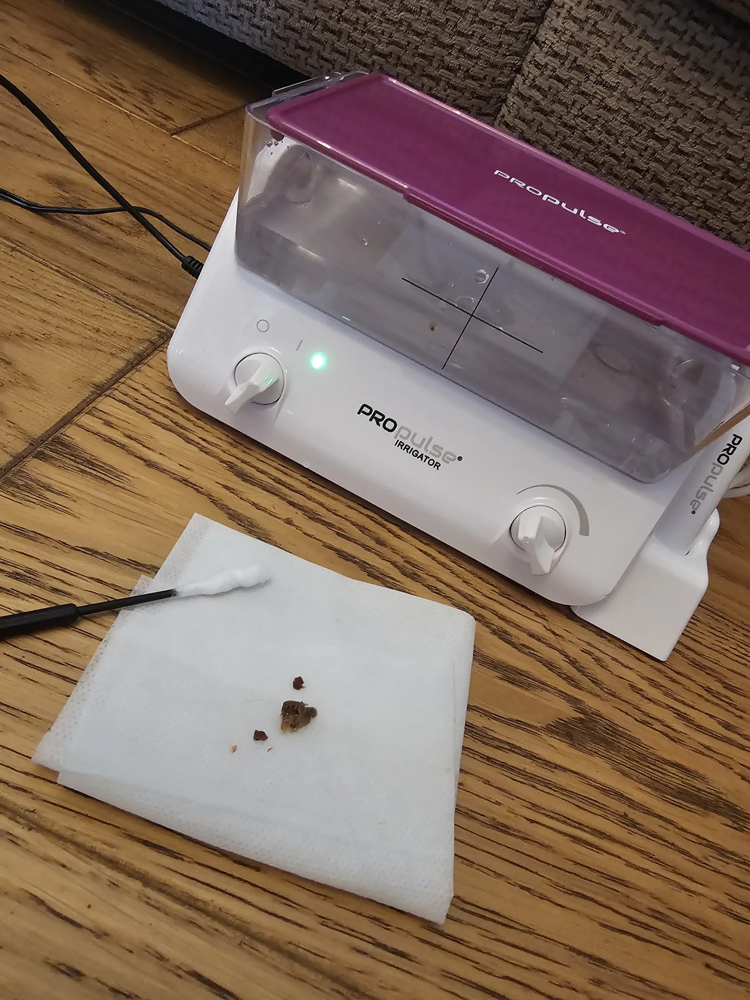
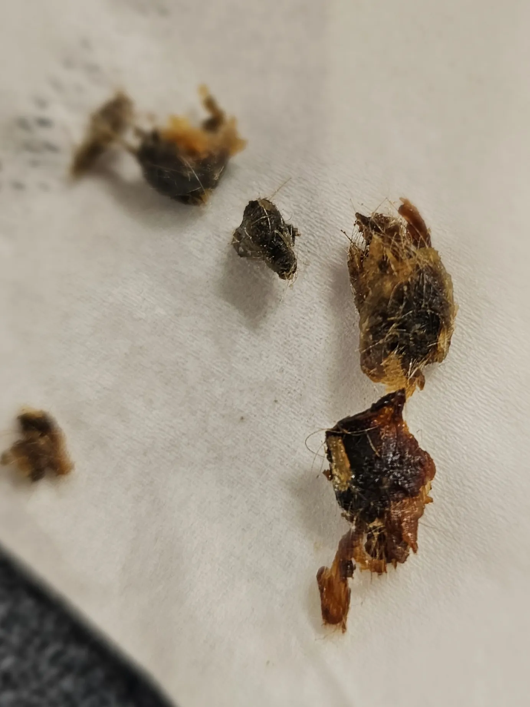
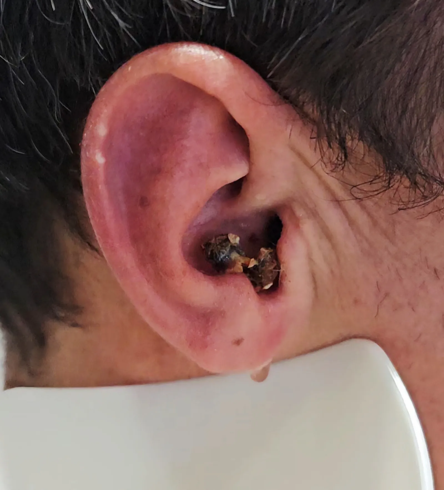

- Home
- Woodhall Spa
- Health & pharmacy
- Lincolnshire Ear Care Specialists
Covers Woodhall Spa, Horncastle, Spilsby, Skegness, Louth and Alford

About Lincolnshire Ear Care Specialists
Lincolnshire Ear Care Specialists is a local, family-run business providing professional mobile earwax removal across Lincolnshire. We specialise in microsuction earwax removal, warm-water irrigation and manual earwax removal, offering convenient home visits in Horncastle, Woodhall Spa, Spilsby, Skegness, Louth, Coningsby, Alford, Tattershall and surrounding villages.
Our mobile ear care service brings professional earwax removal directly to your home, without the need to travel to a clinic. Every appointment includes an ear health assessment to determine the most appropriate removal method. We are fully trained, insured and DBS checked, providing friendly, professional earwax removal services for adults throughout Lincolnshire.
Appointments available 7 days a week, emergency appointments available. Areas covered: Skegness, Burgh le Marsh, Spilsby, Horncastle, Woodhall Spa, Coningsby, Tattershall, Metheringham, Louth and surrounding villages.
What Lincolnshire Ear Care Specialists offers
- Microsuction earwax removal
- Warm-water irrigation
- Manual earwax removal
- Home visits: no need to travel to a clinic
- Ear health assessment at every appointment
- Appointments 7 days a week
- Emergency appointments available
- Fully trained, insured and DBS checked
- Adults throughout Lincolnshire
Photos
4 photos supplied by the business. Select one to see it larger.

Checking the ear canal on the otoscope screen 
Warm-water irrigation unit 
Earwax removed at a home visit 
Before removal


Where we work: Covers 6 towns
Lincolnshire Ear Care Specialists covers the towns below (and the villages around them) and appears on each one's pages for health and pharmacy services. Pick a town to see the rest of the local listings.
Opening hours
7 days a week; emergency appointments available
Customer ratings
Every rating is read by a person before it appears. We never invent ratings; see the ratings policy.
No ratings yet. If you have used this business, be the first to rate it.
Premium listing: the logo, photos, website, phone number, opening hours, description, service list on this page were supplied by the business and are shown as supplied, not verified. Premium listings are paid placements and appear first in search results. Report a problem · Update details (business owners).